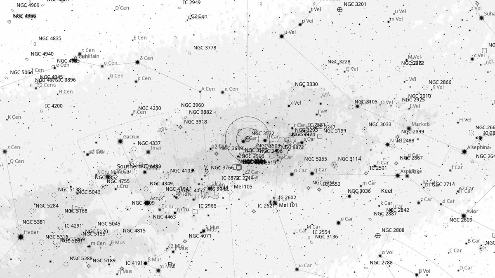
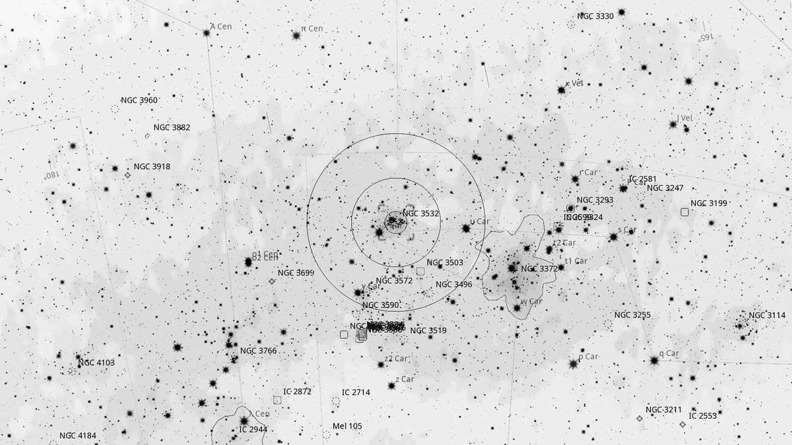
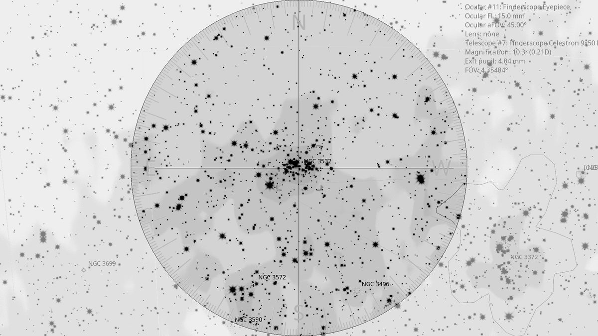
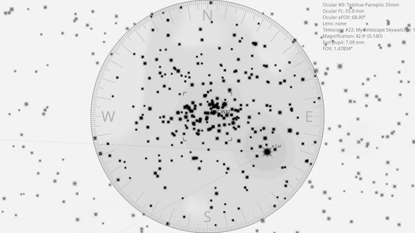

NGC 3532 (OC)
| R.A. | Dec. | Size | Mag | SB | Cnt.St | Type | Distance | Chart |
|---|---|---|---|---|---|---|---|---|
| 11h 05m 40.7s | -58° 45′ 26.9″ | 50.0′ | 3.0 | 11.2 | II1m | OC | -- | -- |

Background
NGC 3532 is one of the brightest and largest open clusters in the southern sky — magnitude 3.0, sprawling almost a full degree across. About 1,300 light-years away and 300 million years old, it contains some 400 stars including several conspicuous red and yellow giants. Sometimes called the “Wishing Well Cluster” for its appearance of silver coins glinting at the bottom of a well. Notably, it was the very first scientific target imaged by the Hubble Space Telescope after launch in May 1990.
My Observing Notes
30-cm (SkyWatcher 12-inch f/5): Naked-eye, easy to spot east of η Carinae. Even at 35 mm Panoptic (43×, 1.6° TFOV) the eyepiece can't capture the entirety of the cluster — only the finderscope (5° FOV) gives a real sense of its size. Several yellow-orange stars stand out among the bluer members, with a particularly bright yellow-orange star marking the FOV edge on the right. A subtle rift of starless space appears to bisect the middle of the cluster.(10 April 2026)
References
Charts



